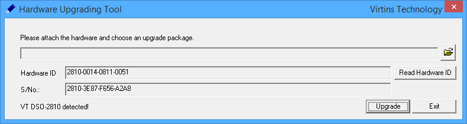

Thank you for taking time to fill out this form!
Thank you for taking time to fill out this form. Your request has been sent and will be processed as soon as possible within 24 hours.
How to obtain the Hardware ID and Serial Number?
Plug in the hardware, and then on Windows desktop, go to [Start] > [All Programs] > [Multi-Instrument] > [VIRTINS Hardware Upgrading Tool] to launch the Hardware Upgrading Tool, the following dialog box will pop up with the hardware ID displayed. (press Read Hardware ID button if it is not displayed)

Apart from the Hardware ID, some VT hardware such as the second-generation DSOs also have a Serial Number (S/No.). In this case, the S/No. will also be displayed in the dialog box and is required for Hardware Remote Upgrade Request.
How to upgrade the license level associated with the hardware?
After you receive the upgrade package file, you can upgrade the hardware by yourself.
Plug in the hardware, and then on Windows desktop, go to [Start] > [All Programs] > [Multi-Instrument] > [VIRTINS Hardware Upgrading Tool] to launch the Hardware Upgrading Tool, the following
dialog box will pop up. Press the File Load button to select the upgrade package file corresponding to the hardware ID, and then press "Upgrade".